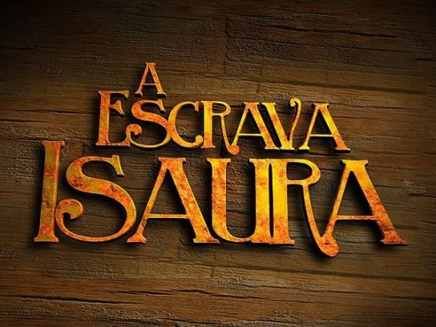
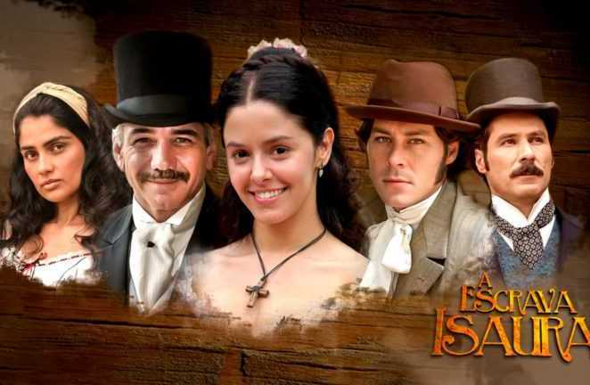
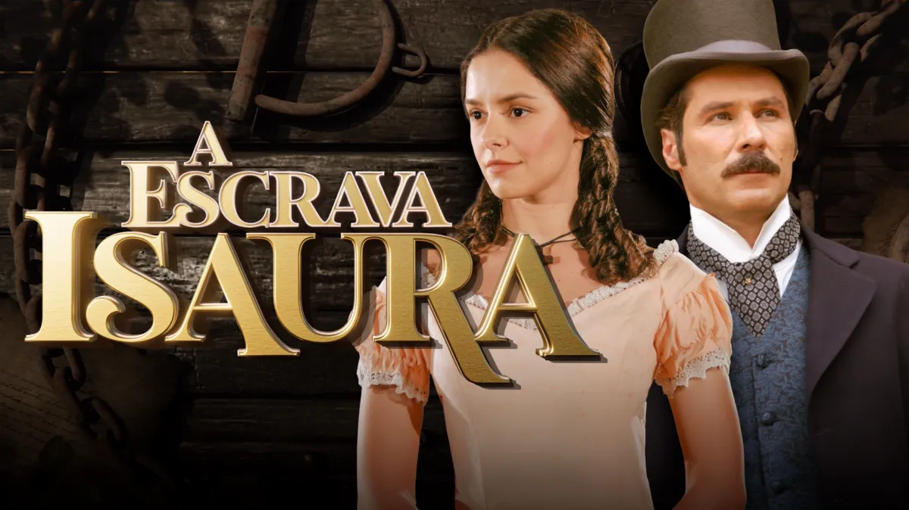

Gira em torno de Isaura, uma bela e virtuosa escrava branca na Fazenda do Comendador Almeida, que se torna o alvo da obsessão doentia e cruel de seu senhor, o perverso Leôncio, após a morte de sua mãe, que prometeu libertá-la. A trama acompanha a luta de Isaura por liberdade, as maldades de Leôncio, seu casamento forçado com Malvina, o amor e a busca por justiça com o abolicionista Álvaro, e a resistência dos escravos, culminando em sua fuga, captura e o desfecho complexo e surpreendente.
Citação Leôncio - A escravinha é minha
A Escrava Isaura
Foca na luta de Isaura, uma escrava branca, contra o cruel e obsessivo senhor Leôncio, que a deseja sexualmente; ela encontra refúgio no abolicionista Álvaro, que a ama e luta por sua liberdade, culminando na falência e suicídio de Leôncio e na libertação e casamento de Isaura, sendo um marco da crítica social à escravidão no Brasil com elementos românticos